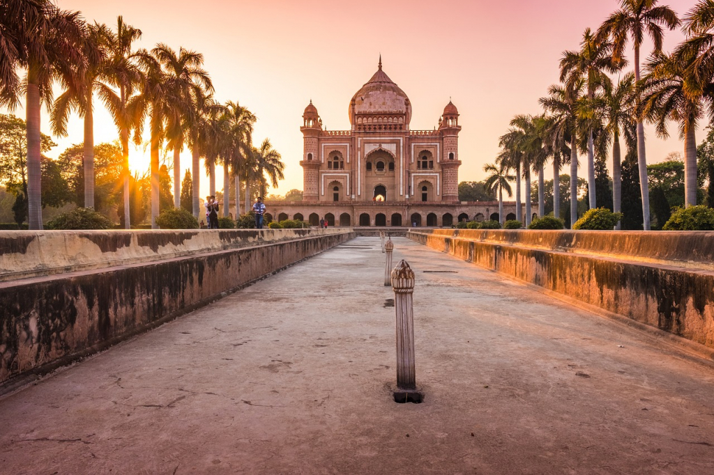

Mon voyage à New-Dehli
Calme et chaotique à la fois, tel est le paradoxe qui se dégage de New Delhi, ville à la configuration très complexe où l'on voit souvent les vaches errer dans les rues bordées par les cabanes. Le Fort rouge, datant du XVIIe siècle, est un ensemble coiffé de dômes et de tourelles, tandis que le marché de Chandni Chowk permet de se livrer à un passionnant exercice de marchandage amical. Le Yantra Mandir, ou Jantar Mantar, regroupe une collection de cadrans solaires extrêmement imposants ainsi qu'une série d'instruments astronomiques encore utilisés aujourd'hui pour les prévisions météo. Les touristes et les habitants du coin affluent à la porte de l'Inde, monument national indien érigé à la mémoire des soldats ayant péri durant la Première Guerre mondiale et la Troisième guerre afghane.